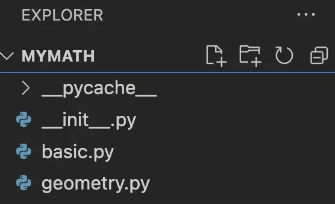
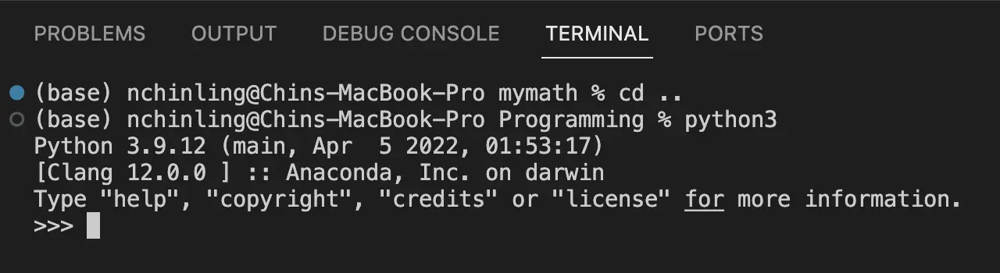
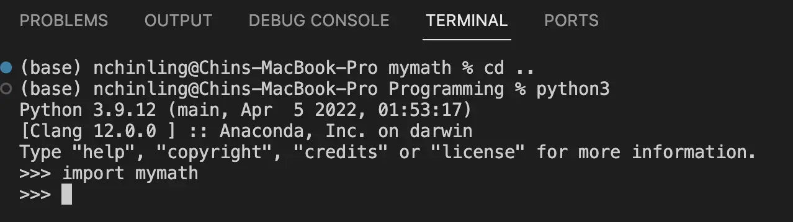
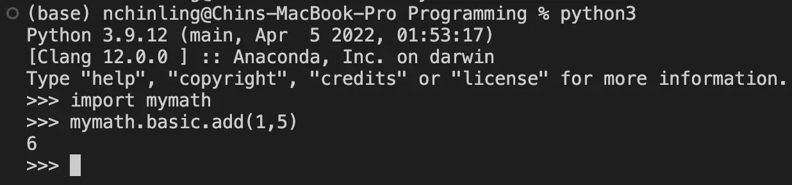
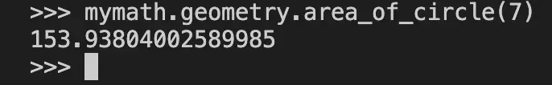

In this article, we are going to learn how to create our very own Python package and access the package's
functions (scripts) using the Python interpreter. A Python package is a
collection of
modules. A module is a file ending in '.py' containing Python functions, classes and variables. These
packages can be imported by another module so that the functions can be accessed or it can be used as
scripts via the Python command line. For additional context, a collection of packages forms a library. Some
of the more established libraries are NumPy (scientific computing), Pandas (data analysis) and Scikit-learn
(machine-learning).
This tutorial assumes one has the pre-requisite knowledge on using the command line and an IDE like VS
Code.
Create a folder. Name the folder with a name of your choice, e.g. mymath
Create a few modules. Create about two to three Python modules, or even more. Each
python module ends with the '.py' extension. Place
them inside the folder created. In this example, I created basic.py and geometric.py and placed them
inside 'mymath' folder.
basic.py
def square(number):
"""
This function returns the square of a given number
"""
return number ** 2
def double(number):
"""
This function returns twice the value of a given number
"""
return number * 2
def add(a, b):
"""
This function returns the sum of given numbers
"""
return a + b
Create a __init__.py file: Place __init__.py inside mymath folder. The file, also
called a package constructor,
initialises the package when it is imported.
Copy the following import statements into __init__.py: The '.' denotes the current
directory, which contains basic.py and geometry.py modules. With these imports, the contents of
basic.py and geometry.py can be accessed using mymath.basic and mymath.geometry respectively.
from . import basic
from . import geometry

This is how the files should be organised in the mymath folder.
At this point, the setup for the package has been created. Let's access it using the Python interpreter.
Type python3 at the terminal to start the Python interpreter.

Type import mymath at the terminal to import the mymath package. If it loads
successfully, it will
proceed to the next line without any error message.

Access the function in the package using the following syntax ..
For example, to test the add function in the basic module, type
mymath.basic.add(1,5).
The output will be 6. To access the area_of_circle function in the geometry
module, type mymath.geometry.area_of_circle(7). The output will be
153.938 (3 d.p.).


This sums up the tutorial on creating a Python package. We have learnt how to create a Python package by
looking at the directory structure and creating a __init__.py to initialise the construction of the package.
We have also
used the Python interpreter to import a package and call its modules' functions. With this knowledge, one
can proceed to build
his or her own package/library of Python functions (scripts) and use them for their work or own projects.
Who knows, you may create the next NumPy scientific computing library 😄. Till next time...